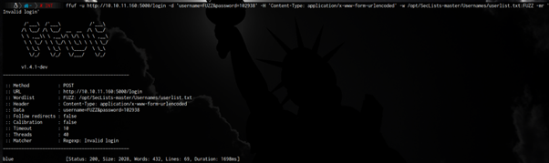

Empezamos tramitando una petición icmp o ping para verificar si tenemos conexión con la máquina.
$ ping 10.10.11.160
El primer escaneo que utilizaré va ser el siguiente:

Luego de saber los puertos que están abiertos, verificamos la version y el servicio que están
corriendo en cada puerto:
Como vemos hay un puerto 5000 abierto, se ve bastante curioso, fui al navegador y vemos un login y un register, obviamente me registre e inicie sesión.
Hay una opcion de ser usuario premiun y ademas viendo las cookies tenemos una cookie tipo json web token, es que bastante vulnerable, así que podemos ver lo siguiente.
Luego de registrarme y ver Json Web Token, necesitaba una forma de saber que usuario es válido, así que empecé a probar.
Una forma que utilice para validar si hay usuarios validos fue la siguiente, usando ffuf.

Y blue es un usuario valido, así vamos con el json web token (JWT).
Utilizaremos la siguiente manera para descifrar la clave secreta del JWT.
Ya que conocemos la clave secreta, podemos generar un JWT con el mismo flask-usingn.
Cambiamos el JWT y recargamos la pagina.
Dentro del usuario blue, podemos notar que tenemos la siguiente nota.
La cual nos da un usuario y una contraseña para el servidor ftp.
Si ingresamos las credenciales, podemos ver que nos da acceso.
Tenemos un archivo de politicas, dentro de ellas hay unas politicas de creación de contraseñas que dice lo siguiente.
Tenemos un apartado que nos describe cuales son las credenciales por defecto de los usuarios.
Anteriormente vimos un usuario llamado “ftpadmin”, dentro de la nota…
Probando las credenciales por defecto.
Nos pudimos conectar.
Dentro del servidor ftp encontramos unos archivos .zip.
Los archivos .zip contienen un código en Python del backend de la página web, contienen dos archivos, uno de ellos contiene un código que nos lleva a otra página la cual contiene un “export_note directory web”.
La aplicación básicamente utiliza un convertidor a pdf llamado “md-to-pdf” el cual es vulnerable a RCE. Usando la siguiente sintaxis de código.
Desde nuestra maquina atacante llamamos un archivo que nosotros configuramos para ejecutar el código que deseemos utilizando “execSync” para ejecutar el comando deseado, utilice un script .sh el cual contiene un oneliner de una reverse shell.
Solo tenemos que abrir un servidor con python3 llamando al archivo test.md con la direccion ip de nuestra vpn mediante el apartado anterior de “export directly from cloud” y abrimos un puerto con nc para estar en escucha para cuando se ejecute el comando y pasa lo siguiente.
Y atrapamos la shell reversa.
Tenemos acceso y tenemos la flag, ahora tenemos que escalar privilegios.
Para esto, en los archivos anteriores donde teníamos el código fuente, conseguimos unas credenciales para iniciar en mysql servidor como root.
Investigando un poco, me tope con una forma de leer archivos ya que tenemos las credenciales del usuario root.
Básicamente complicamos el script de CVE anterior de la siguiente manera y lo pasamos a la maquina víctima.
Luego solo seguimos los siguientes pasos.
Con los pasos anteriores conseguimos leer el archivo deseado, en mi caso flag final.
Information
- #Pentesting #Cybersecurity #RedTeam
- Machine: TimeLapse
- Difficulty: Medium
- Plataforma: HACKTHEBOX
- Sistema Operativo: Parrot
- Skills: Brute forcing Username using FFUF - Cracking JWT Secret password using "Flask-unsign" - Leak Informacion from Notes - Leak Credentials from backup - Analising Code Python - RCE from Export Apart using URL Custom - Escalada Using CVE and abusing mysql